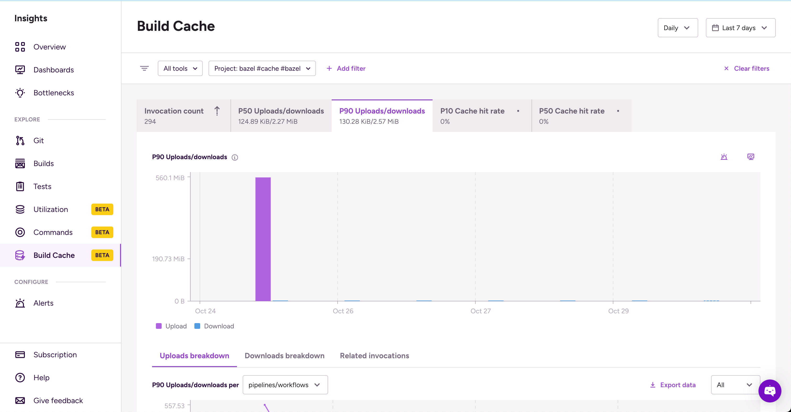

Build cache metrics
Build cache metrics provide data-based visibility into the Bitrise Build Cache system. You can achieve more consistent and reliable CI/CD workflows by reducing the unpredictability that comes with inefficient caching.
Build cache metrics provide data-based visibility into the Bitrise Build Cache system. You can achieve more consistent and reliable CI/CD workflows by reducing the unpredictability that comes with inefficient caching.
If your Bitrise Build Cache is correctly set up, you need no additional configuration to access data in Insights. The following Build Cache metrics are available:
-
Invocation count: This metric shows how frequently the cache is used in your builds and helps you understand the frequency and type of commands being executed. A high invocation count indicates strong cache adoption while a low count might mean caching isn't utilized to its full effect.
-
Uploads/downloads: This measures the amount of data transfer to and from the build cache per each command. High data transfer volumes can point to excessive uploads or downloads which might slow down your builds. If downloads aren't significantly lower than uploads, it might indicate inefficient caching. Insights shows the p50 (median) value and the p90 value per invocation for both uploads and downloads: that is, how much data a given invocation uploads and downloads.
 -
Cache hit rate: This measures the percentage of data requests that can be served by the build cache. Insights shows the p10 hit rate (meaning only 10% of cases will have an equivalent or lower hit rate) and the median (p50) hit rate. The p10 value is particularly important because a low hit rate suggests suboptimal cache configuration or incorrectly defined cache keys.
For Build Cache metrics - like any other metrics in Insights - you can:
-
Set alerts for specific thresholds.
Common use cases for build cache metrics
If your metrics show sudden and significant variation, you can check each related invocation to find out when the issue started. Filter to the relevant item/time period and then select the Related invocations tab. This can be useful for both uploads/downloads or cache hit rate.
For example, if there is a sudden spike in uploads compared to downloads, it might mean that data is being repeatedly generated and stored but rarely reused, reducing efficiency:
For another example, here's a sudden change in cache hit rate for a given Workflow, suggesting a weak spot in the caching setup:
You can look at the invocation count to identify when a project started (when the invocation count suddenly spikes) or stopped (when the invocation count suddenly drops) using the Build Cache:
This can help, for example, detecting and fixing configuration issues that break the cache setup.